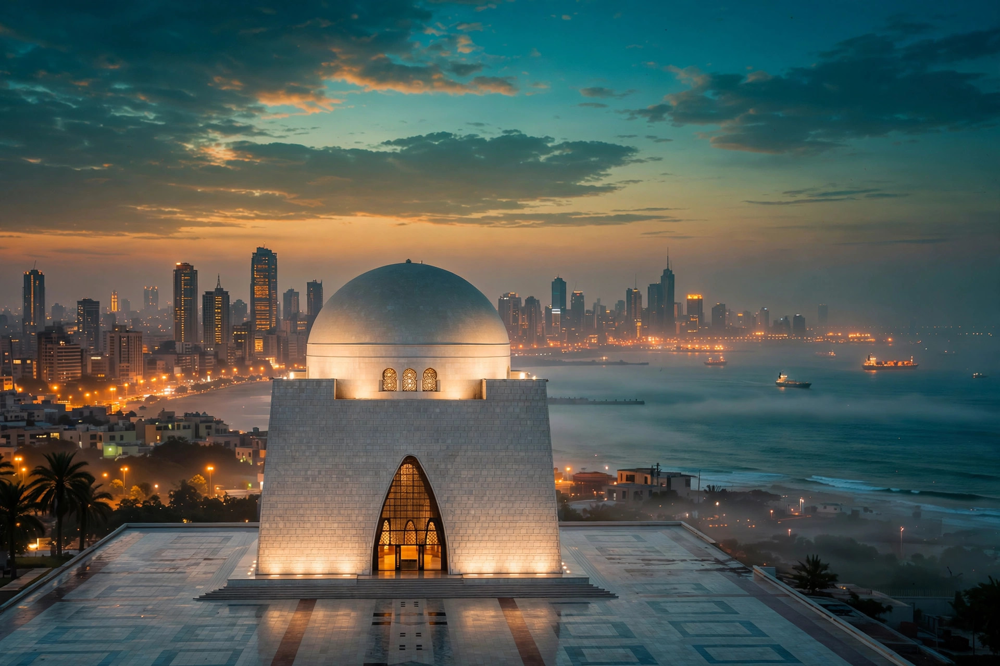

BPExch dealer in Karachi: accounts that know the city
Karachi does not sleep, and neither does its betting. This is the deepest BPExch market in the country — port money, salaried DHA money and Lyari football brains all on the same ladder — and the desk habits here are built for a city that funds accounts at 1am without blinking.
In Karachi, BPExch accounts are opened free on WhatsApp in about two minutes and funded from Rs 500 — Easypaisa, JazzCash and Raast bank transfers all move fast here. The desk runs 24/7, which in Karachi is not a slogan but a shift pattern.

Funding habits by the sea
Karachi is the most wallet-diverse city we serve. Easypaisa and JazzCash split the city between them, and Raast transfers from the salaried crowd in PECHS and DHA often beat both to the balance. Match-night deposits peak later here than anywhere else — the second innings of a day-nighter collides with the city's actual evening, and the desk staffs for it. One Karachi-specific habit worth copying wherever you are: players here keep a small standing balance instead of depositing mid-innings, because they have all lived through a wallet slowdown in the 38th over.
The Karachi scam to know
The 'head office' trick runs hot in Karachi: polished pages claiming a walk-in BPExch office in Clifton or Shahrah-e-Faisal where you can 'verify and top up in person'. There is no walk-in office — desks are WhatsApp businesses, and an office invitation is how a stranger gets your cash into his hand instead of your account. The second pattern is copycat desk numbers pasted into classified listings; the number differs from the real one by a single digit, close enough to survive a tired glance at midnight. Reach the desk through the site you trust, every time, not through a listing anyone can post.
Whoever you open with: the account is free, the password is yours alone, and no desk ever asks for a wallet PIN or an OTP. A Karachi offer that breaks any of those is not an offer — it is the beginning of a story you will tell other people as a warning.
Hours, weather and the Karachi queue
Rain is Karachi's only real outage: two days of monsoon flooding slows the agent networks and the banks together, and deposit confirmations stretch. Everything else — heat, strikes, a Pakistan–India final — the desk treats as a staffing problem, not an excuse. Withdrawals follow the same rule as everywhere: same-day as the norm, requested-to-your-own-wallet, with the BPExch withdrawal page carrying the timings in full.
Getting started from Karachi
The steps are the same ones on the BPExch account page, because they work: message the desk, choose your username, receive the BPExch ID, test the login at zero balance, change the password, then fund from Rs 500 when — and only when — you are ready. What this page adds is the local knowledge around those steps: which wallet your city actually uses, when its queues form, and which of its scams to refuse by name.
Where to go next
Questions we get asked about this
Can I open a BPExch account in Karachi at night?
Yes — the desk is genuinely 24/7 and Karachi is the reason why. Accounts opened at 2am get the same zero-balance test and Rs 500 first-deposit routine as accounts opened at noon.
Which wallet is fastest for deposits in Karachi?
All three rails are quick here; Raast bank transfers are the most consistent on match nights, with Easypaisa and JazzCash close behind outside peak overs.
Is there a BPExch office in Karachi I can visit?
No. There is no walk-in office for this desk in Karachi or anywhere else. Anyone inviting you to one is running the city's most common account scam — deal with the desk on WhatsApp only.
Do Karachi players use dealers or open directly?
Both routes end at a desk-issued account. What differs is service: a desk that answers at 1am, credits by TID and pays to your own wallet. Judge any of them by a small first withdrawal.
Last updated 5 October 2026. Figures on this page verified against the desk's own records.